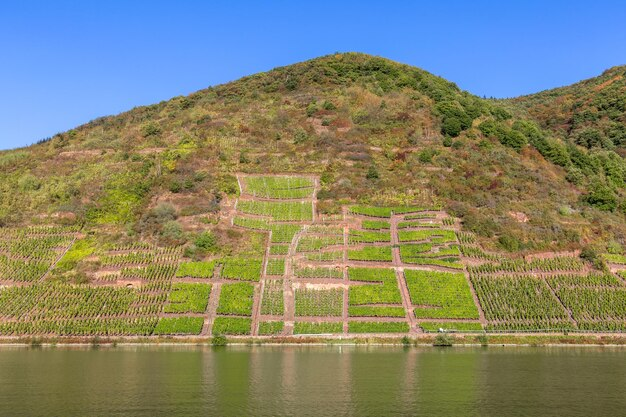
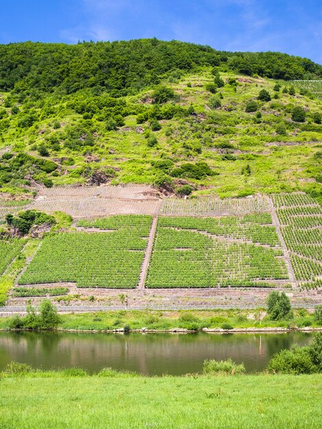

1.Chan Chan: La Ciudad de Adobe Más Grande de América Precolombina
- Chan Chan es la ciudad construida íntegramente con adobe más grande del continente americano y una de las más grandes del mundo.
- Fue la capital del poderoso Imperio Chimú antes de la llegada de los Incas.
- Está organizada en nueve grandes ciudadelas amuralladas, que servían como palacios, centros administrativos y residencias de la élite.
Chan Chan fue la capital del Imperio Chimú y está ubicada en la costa norte del Perú, cerca de Trujillo. Es considerada la ciudad de adobe más grande del continente americano.
2.Arquitectura
- Sus paredes están decoradas con relieves geométricos y figuras de animales marinos y seres mitológicos.
- Posee un avanzado sistema de canales para irrigación y almacenamiento de agua, que muestra un gran conocimiento hidráulico.
- Está formada por enormes murallas de adobe que rodean varios palacios o “ciudadelas”.
3.Conservación

- Al estar construida con adobe, Chan Chan es vulnerable a la erosión causada por el clima, especialmente la lluvia y el viento.
- Se realizan esfuerzos constantes para su preservación y restauración, garantizando que esta joya arqueológica se mantenga para futuras generaciones.
4. Turismo

- Los visitantes pueden recorrer las ruinas, admirar los murales y aprender sobre la cultura Chimú.
- Ofrece una experiencia única para quienes desean conocer la historia y las costumbres precolombinas del Perú.